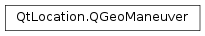

QGeoManeuver¶
Synopsis¶
Functions¶
- def
__eq__(other) - def
__ne__(other) - def
direction() - def
distanceToNextInstruction() - def
extendedAttributes() - def
instructionText() - def
isValid() - def
position() - def
setDirection(direction) - def
setDistanceToNextInstruction(distance) - def
setExtendedAttributes(extendedAttributes) - def
setInstructionText(instructionText) - def
setPosition(position) - def
setTimeToNextInstruction(secs) - def
setWaypoint(coordinate) - def
timeToNextInstruction() - def
waypoint()
Detailed Description¶
The
PySide2.QtLocation.QGeoManeuverclass represents the information relevant to the point at which two QGeoRouteSegments meet.
PySide2.QtLocation.QGeoRouteSegmentinstances can be thought of as edges on a routing graph, withPySide2.QtLocation.QGeoManeuverinstances as optional labels attached to the vertices of the graph.The most interesting information help in a
PySide2.QtLocation.QGeoManeuverinstance is normally the textual navigation to provide and the position at which to provide it, accessible byPySide2.QtLocation.QGeoManeuver.instructionText()andPySide2.QtLocation.QGeoManeuver.position()respectively.It is also possible to determine if a routing waypoint has been passed by checking if
PySide2.QtLocation.QGeoManeuver.waypoint()returns a validPySide2.QtPositioning.QGeoCoordinate.
-
class
PySide2.QtLocation.QGeoManeuver¶ -
class
PySide2.QtLocation.QGeoManeuver(other) Parameters: other – PySide2.QtLocation.QGeoManeuverConstructs a invalid maneuver object.
The maneuver will remain invalid until one of
PySide2.QtLocation.QGeoManeuver.setPosition(),PySide2.QtLocation.QGeoManeuver.setInstructionText(),PySide2.QtLocation.QGeoManeuver.setDirection(),PySide2.QtLocation.QGeoManeuver.setTimeToNextInstruction(),PySide2.QtLocation.QGeoManeuver.setDistanceToNextInstruction()orPySide2.QtLocation.QGeoManeuver.setWaypoint()is called.Constructs a maneuver object from the contents of
other.
-
PySide2.QtLocation.QGeoManeuver.InstructionDirection¶ Describes the change in direction associated with the instruction text that is associated with a QGeoManaeuver.
Constant Description QGeoManeuver.NoDirection There is no direction associated with the instruction text. QGeoManeuver.DirectionForward The instruction indicates that the direction of travel does not need to change. QGeoManeuver.DirectionBearRight The instruction indicates that the direction of travel should bear to the right. QGeoManeuver.DirectionLightRight The instruction indicates that a light turn to the right is required. QGeoManeuver.DirectionRight The instruction indicates that a turn to the right is required. QGeoManeuver.DirectionHardRight The instruction indicates that a hard turn to the right is required. QGeoManeuver.DirectionUTurnRight The instruction indicates that a u-turn to the right is required. QGeoManeuver.DirectionUTurnLeft The instruction indicates that a u-turn to the left is required. QGeoManeuver.DirectionHardLeft The instruction indicates that a hard turn to the left is required. QGeoManeuver.DirectionLeft The instruction indicates that a turn to the left is required. QGeoManeuver.DirectionLightLeft The instruction indicates that a light turn to the left is required. QGeoManeuver.DirectionBearLeft The instruction indicates that the direction of travel should bear to the left.
-
PySide2.QtLocation.QGeoManeuver.direction()¶ Return type: PySide2.QtLocation.QGeoManeuver.InstructionDirectionReturns the direction associated with the associated instruction.
-
PySide2.QtLocation.QGeoManeuver.distanceToNextInstruction()¶ Return type: PySide2.QtCore.qrealReturns the distance, in meters, between the point at which the associated instruction was issued and the point that the next instruction should be issued.
-
PySide2.QtLocation.QGeoManeuver.extendedAttributes()¶ Return type: PySide2.QtCore.QVariantMapReturns the extended attributes associated with this maneuver.
-
PySide2.QtLocation.QGeoManeuver.instructionText()¶ Return type: unicode Returns the textual navigation instructions.
-
PySide2.QtLocation.QGeoManeuver.isValid()¶ Return type: PySide2.QtCore.boolReturns whether this maneuver is valid or not.
Invalid maneuvers are used when there is no information that needs to be attached to the endpoint of a
PySide2.QtLocation.QGeoRouteSegmentinstance.
-
PySide2.QtLocation.QGeoManeuver.__ne__(other)¶ Parameters: other – PySide2.QtLocation.QGeoManeuverReturn type: PySide2.QtCore.boolReturns whether this maneuver is not equal to
other.
-
PySide2.QtLocation.QGeoManeuver.__eq__(other)¶ Parameters: other – PySide2.QtLocation.QGeoManeuverReturn type: PySide2.QtCore.boolReturns whether this maneuver is equal to
other.
-
PySide2.QtLocation.QGeoManeuver.position()¶ Return type: PySide2.QtPositioning.QGeoCoordinateReturns the position where
PySide2.QtLocation.QGeoManeuver.instructionText()should be displayed.
-
PySide2.QtLocation.QGeoManeuver.setDirection(direction)¶ Parameters: direction – PySide2.QtLocation.QGeoManeuver.InstructionDirectionSets the direction associated with the associated instruction to
direction.
-
PySide2.QtLocation.QGeoManeuver.setDistanceToNextInstruction(distance)¶ Parameters: distance – PySide2.QtCore.qrealSets the distance, in meters, between the point at which the associated instruction was issued and the point that the next instruction should be issued to
distance.
-
PySide2.QtLocation.QGeoManeuver.setExtendedAttributes(extendedAttributes)¶ Parameters: extendedAttributes – PySide2.QtCore.QVariantMapSets the extended attributes
extendedAttributesassociated with this maneuver.
-
PySide2.QtLocation.QGeoManeuver.setInstructionText(instructionText)¶ Parameters: instructionText – unicode Sets the textual navigation instructions to
instructionText.
-
PySide2.QtLocation.QGeoManeuver.setPosition(position)¶ Parameters: position – PySide2.QtPositioning.QGeoCoordinateSets the position where
PySide2.QtLocation.QGeoManeuver.instructionText()should be displayed toposition.
-
PySide2.QtLocation.QGeoManeuver.setTimeToNextInstruction(secs)¶ Parameters: secs – PySide2.QtCore.intSets the estimated time it will take to travel from the point at which the associated instruction was issued and the point that the next instruction should be issued, in seconds, to
secs.
-
PySide2.QtLocation.QGeoManeuver.setWaypoint(coordinate)¶ Parameters: coordinate – PySide2.QtPositioning.QGeoCoordinateSets the waypoint associated with this maneuver to
coordinate.
-
PySide2.QtLocation.QGeoManeuver.timeToNextInstruction()¶ Return type: PySide2.QtCore.intReturns the estimated time it will take to travel from the point at which the associated instruction was issued and the point that the next instruction should be issued, in seconds.
-
PySide2.QtLocation.QGeoManeuver.waypoint()¶ Return type: PySide2.QtPositioning.QGeoCoordinateReturns the waypoint associated with this maneuver.
If there is not waypoint associated with this maneuver an invalid
PySide2.QtPositioning.QGeoCoordinatewill be returned.
© 2018 The Qt Company Ltd. Documentation contributions included herein are the copyrights of their respective owners. The documentation provided herein is licensed under the terms of the GNU Free Documentation License version 1.3 as published by the Free Software Foundation. Qt and respective logos are trademarks of The Qt Company Ltd. in Finland and/or other countries worldwide. All other trademarks are property of their respective owners.